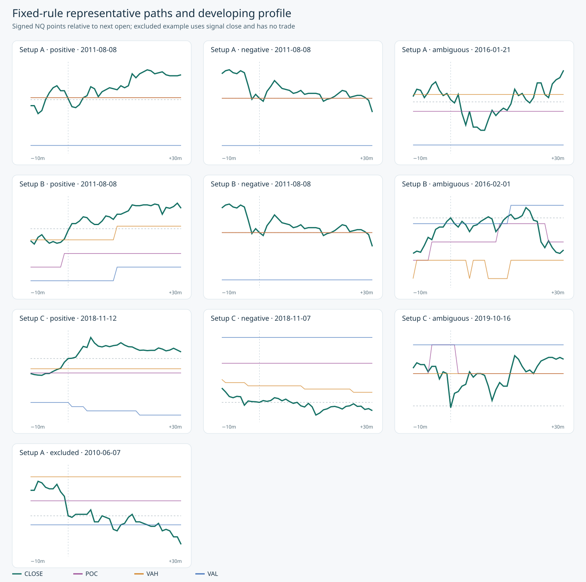

Frozen protocol 1.0.0. Setup A is **long at POC after an upper VAH excursion** and **short at POC after a lower VAL excursion**, as confirmed by the user. The primary 30-minute complete cohort has 11,990 setup/horizon records across sides and splits. These are hypothetical next-open excursions, not realized trades.
| split | setup | direction | complete | mfe_points_median | mae_points_median | terminal_points_mean | terminal_positive_share | support |
|---|---|---|---|---|---|---|---|---|
| development | A | -1 | 998 | 7.125 | 8.000 | -0.670842 | 0.455912 | adequate |
| development | A | 1 | 1287 | 6.750 | 7.750 | -0.930458 | 0.481740 | adequate |
| development | B | -1 | 1294 | 8.000 | 7.750 | 0.699768 | 0.462133 | adequate |
| development | B | 1 | 1772 | 6.750 | 6.750 | 0.241535 | 0.486456 | adequate |
| development | C | -1 | 156 | 11.250 | 10.125 | 1.073718 | 0.525641 | adequate |
| development | C | 1 | 171 | 11.000 | 11.500 | -0.282164 | 0.573099 | adequate |
| final_2026_ytd | A | -1 | 177 | 23.750 | 22.750 | 3.902542 | 0.525424 | adequate |
| final_2026_ytd | A | 1 | 257 | 21.000 | 20.250 | -2.305447 | 0.533074 | adequate |
| final_2026_ytd | B | -1 | 221 | 23.500 | 23.250 | -0.014706 | 0.515837 | adequate |
| final_2026_ytd | B | 1 | 282 | 16.125 | 17.000 | -1.515071 | 0.489362 | adequate |
| final_2026_ytd | C | -1 | 111 | 28.750 | 25.750 | 6.909910 | 0.549550 | adequate |
| final_2026_ytd | C | 1 | 104 | 17.875 | 32.000 | -9.146635 | 0.384615 | adequate |
| historical | A | -1 | 413 | 4.000 | 4.000 | 0.115012 | 0.464891 | adequate |
| historical | A | 1 | 621 | 3.750 | 3.500 | 0.162238 | 0.512077 | adequate |
| historical | B | -1 | 526 | 3.750 | 4.250 | 0.278042 | 0.408745 | adequate |
| historical | B | 1 | 905 | 3.500 | 3.500 | -0.065470 | 0.490608 | adequate |
| historical | C | -1 | 15 | 7.000 | 3.000 | -0.633333 | 0.400000 | low_support |
| historical | C | 1 | 7 | 2.500 | 6.000 | -4.857143 | 0.285714 | low_support |
| validation | A | -1 | 450 | 8.250 | 9.500 | -0.936667 | 0.451111 | adequate |
| validation | A | 1 | 588 | 8.250 | 8.250 | 1.163690 | 0.540816 | adequate |
| validation | B | -1 | 540 | 8.500 | 8.500 | -0.351389 | 0.472222 | adequate |
| validation | B | 1 | 889 | 8.000 | 7.500 | 1.316648 | 0.537683 | adequate |
| validation | C | -1 | 95 | 13.000 | 13.750 | -3.160526 | 0.505263 | adequate |
| validation | C | 1 | 111 | 14.500 | 12.500 | 3.358108 | 0.558559 | adequate |
| split | setup | direction | events | matched | mfe_difference_mean | mfe_ci_lower | mfe_ci_upper | mae_difference_mean | mae_ci_lower | mae_ci_upper | terminal_difference_mean | terminal_ci_lower | terminal_ci_upper |
|---|---|---|---|---|---|---|---|---|---|---|---|---|---|
| development | A | -1 | 998 | 998 | 0.271794 | -0.860512 | 1.428121 | 1.330160 | 0.478258 | 2.305715 | -1.011774 | -2.433533 | 0.362729 |
| development | A | 1 | 1287 | 1287 | -0.566628 | -1.342301 | 0.267403 | 1.554973 | 0.749041 | 2.365433 | -1.522727 | -2.583860 | -0.433195 |
| development | B | -1 | 1294 | 1294 | 1.286128 | 0.070421 | 2.556131 | -0.091190 | -0.864253 | 0.736375 | 0.453053 | -0.905341 | 1.777994 |
| development | B | 1 | 1772 | 1772 | 0.251693 | -0.503971 | 1.132055 | -0.632619 | -1.397794 | 0.145363 | 0.542466 | -0.525790 | 1.702111 |
| development | C | -1 | 156 | 156 | 1.137821 | -2.582720 | 5.320370 | 1.149038 | -1.105077 | 3.283542 | 0.256410 | -3.610372 | 4.721290 |
| development | C | 1 | 171 | 171 | 2.608187 | 0.416025 | 4.810559 | 2.323099 | -0.339554 | 5.264867 | 0.456140 | -4.316156 | 4.182460 |
| final_2026_ytd | A | -1 | 177 | 177 | 3.244350 | -3.367311 | 10.849705 | 2.254237 | -3.889328 | 10.072279 | 2.399718 | -2.815884 | 6.701014 |
| final_2026_ytd | A | 1 | 257 | 257 | -2.018482 | -6.430365 | 3.488372 | -0.946498 | -6.940436 | 6.109324 | 1.804475 | -5.011046 | 7.741921 |
| final_2026_ytd | B | -1 | 221 | 221 | 4.590498 | -1.350612 | 10.802501 | 6.583710 | 1.426855 | 12.106808 | -1.803167 | -7.213858 | 3.131837 |
| final_2026_ytd | B | 1 | 282 | 282 | -2.384752 | -7.762923 | 3.289878 | 2.234043 | -3.100908 | 9.380693 | -5.487589 | -11.330012 | 0.079708 |
| final_2026_ytd | C | -1 | 111 | 111 | 1.290541 | -5.166462 | 6.643619 | 2.439189 | -6.021977 | 10.750036 | -0.993243 | -11.894066 | 10.029687 |
| final_2026_ytd | C | 1 | 104 | 104 | 1.375000 | -5.650310 | 9.014367 | 5.040865 | -6.433975 | 13.321603 | -6.721154 | -13.376084 | 1.442738 |
| historical | A | -1 | 413 | 413 | -0.453995 | -1.528852 | 0.820964 | -0.113801 | -0.952612 | 0.633591 | -0.475182 | -1.826753 | 1.107421 |
| historical | A | 1 | 621 | 621 | 0.612319 | 0.005591 | 1.201890 | -0.179549 | -0.941241 | 0.586660 | 0.507649 | -0.386473 | 1.451499 |
| historical | B | -1 | 526 | 526 | 0.711977 | 0.064820 | 1.482751 | 0.212452 | -0.318285 | 0.776691 | 0.468631 | -0.350274 | 1.347719 |
| historical | B | 1 | 905 | 905 | 0.248619 | -0.343010 | 0.893369 | -0.460497 | -0.930892 | 0.056895 | 0.298619 | -0.417710 | 1.002454 |
| historical | C | -1 | 15 | 15 | 3.183333 | -0.250000 | 6.100000 | -2.016667 | -6.875000 | 2.429167 | 0.800000 | -3.339583 | 7.916667 |
| historical | C | 1 | 7 | 7 | -3.642857 | -8.250000 | 4.250000 | 1.750000 | -2.937500 | 8.333333 | -5.714286 | -12.000000 | 1.312500 |
| validation | A | -1 | 450 | 450 | -0.192222 | -2.879695 | 2.205164 | 0.127222 | -1.576695 | 2.206276 | -0.249444 | -3.498639 | 2.472461 |
| validation | A | 1 | 588 | 588 | 1.097789 | -0.860396 | 3.040306 | -1.056973 | -2.938819 | 0.713088 | 1.579082 | -0.573512 | 3.890688 |
| validation | B | -1 | 540 | 540 | 2.758796 | 0.642793 | 5.100689 | 0.523148 | -1.348562 | 2.714528 | 1.622222 | -1.012397 | 4.310369 |
| validation | B | 1 | 889 | 889 | 0.261811 | -1.004157 | 1.705727 | -0.332396 | -1.670692 | 0.898784 | 0.329021 | -1.193164 | 2.131024 |
| validation | C | -1 | 95 | 95 | 2.060526 | -3.647671 | 7.382563 | 6.797368 | 1.050992 | 14.414352 | -3.865789 | -13.569857 | 4.128657 |
| validation | C | 1 | 111 | 111 | 3.225225 | -2.666249 | 9.215371 | -1.621622 | -6.806997 | 3.553886 | 4.628378 | -3.870252 | 12.851679 |
| split | setup | direction | events | favorable_first_lower | favorable_first_upper | ambiguous | neither |
|---|---|---|---|---|---|---|---|
| development | A | -1 | 998 | 0.480962 | 0.483968 | 3 | 0 |
| development | A | 1 | 1287 | 0.466977 | 0.475524 | 11 | 0 |
| development | B | -1 | 1294 | 0.508501 | 0.516229 | 10 | 0 |
| development | B | 1 | 1772 | 0.500564 | 0.504515 | 7 | 0 |
| development | C | -1 | 156 | 0.532051 | 0.538462 | 1 | 0 |
| development | C | 1 | 171 | 0.497076 | 0.508772 | 2 | 0 |
| final_2026_ytd | A | -1 | 177 | 0.480226 | 0.508475 | 5 | 0 |
| final_2026_ytd | A | 1 | 257 | 0.521401 | 0.529183 | 2 | 0 |
| final_2026_ytd | B | -1 | 221 | 0.484163 | 0.506787 | 5 | 0 |
| final_2026_ytd | B | 1 | 282 | 0.503546 | 0.514184 | 3 | 0 |
| final_2026_ytd | C | -1 | 111 | 0.558559 | 0.558559 | 0 | 0 |
| final_2026_ytd | C | 1 | 104 | 0.394231 | 0.413462 | 2 | 0 |
| historical | A | -1 | 413 | 0.503632 | 0.506053 | 1 | 0 |
| historical | A | 1 | 621 | 0.481481 | 0.491143 | 6 | 0 |
| historical | B | -1 | 526 | 0.477186 | 0.484791 | 4 | 0 |
| historical | B | 1 | 905 | 0.482873 | 0.487293 | 4 | 0 |
| historical | C | -1 | 15 | 0.666667 | 0.733333 | 1 | 0 |
| historical | C | 1 | 7 | 0.428571 | 0.428571 | 0 | 0 |
| validation | A | -1 | 450 | 0.502222 | 0.515556 | 6 | 0 |
| validation | A | 1 | 588 | 0.491497 | 0.500000 | 5 | 0 |
| validation | B | -1 | 540 | 0.475926 | 0.479630 | 2 | 0 |
| validation | B | 1 | 889 | 0.514061 | 0.519685 | 5 | 0 |
| validation | C | -1 | 95 | 0.431579 | 0.431579 | 0 | 0 |
| validation | C | 1 | 111 | 0.612613 | 0.621622 | 1 | 0 |
| year | complete_six_hour_evenings | strict_overnight_input | strict_hvn_reference_input |
|---|---|---|---|
| 2010 | 0 | 0 | 0 |
| 2011 | 0 | 207 | 0 |
| 2012 | 0 | 9 | 0 |
| 2013 | 0 | 38 | 0 |
| 2014 | 1 | 553 | 0 |
| 2015 | 1 | 885 | 0 |
| 2016 | 11 | 3929 | 0 |
| 2017 | 11 | 7433 | 0 |
| 2018 | 147 | 38290 | 3120 |
| 2019 | 197 | 49972 | 5943 |
| 2020 | 242 | 57878 | 15310 |
| 2021 | 240 | 57895 | 12960 |
| 2022 | 246 | 60240 | 22305 |
| 2023 | 231 | 56547 | 13590 |
| 2024 | 238 | 58462 | 11769 |
| 2025 | 243 | 58439 | 19369 |
| 2026 | 179 | 42457 | 17797 |
Strict coverage is sparse before 2018.
| split | setup | direction | variant | complete | mfe_points_mean | mae_points_mean | terminal_points_mean |
|---|---|---|---|---|---|---|---|
| validation | A | -1 | adjusted_snapshot | 444 | 14.626126 | 13.834459 | -0.972410 |
| validation | A | 1 | adjusted_snapshot | 600 | 12.853750 | 12.229167 | 0.981250 |
| validation | A | -1 | frozen_breakout_level | 383 | 12.809399 | 13.550261 | -2.102480 |
| validation | A | 1 | frozen_breakout_level | 494 | 12.345142 | 12.563765 | 0.896761 |
| validation | B | -1 | adjusted_snapshot | 555 | 15.624775 | 13.812613 | 0.107207 |
| validation | B | 1 | adjusted_snapshot | 893 | 11.926372 | 11.049832 | 1.304591 |
| validation | B | -1 | frozen_breakout_level | 580 | 15.171552 | 14.003017 | -0.876293 |
| validation | B | 1 | frozen_breakout_level | 854 | 11.863583 | 11.100995 | 1.047424 |
| validation | C | -1 | adjusted_snapshot | 94 | 20.702128 | 21.587766 | -1.888298 |
| validation | C | 1 | adjusted_snapshot | 106 | 21.403302 | 18.339623 | 3.398585 |
Adjusted-profile coordinates are retrospective; all outcomes use actual unadjusted prices. Cohorts differ.

The excluded example has no trade outcome; it is anchored to signal close.
Primary inputs are pre-signal unadjusted feature snapshots; the indicator release is pinned. Every complete fixed horizon uses contiguous minute bars, the actual next open, and entry candle OHLC. Incomplete futures paths and unavailable causal features are explicit exclusions. Two-week moving ISO-week blocks (2,000 draws) express uncertainty. Matched controls share year, side, New York hour and development-defined pre-signal volatility quintile. One-minute OHLCV does not reveal bid/ask, queue position, exact intrabar ordering, or TradingView tick parity. Same-bar threshold ordering is bounded. No net-profit or strategy claim is made.
Full Markdown report · Metrics · Opportunity funnel · Controls · Races